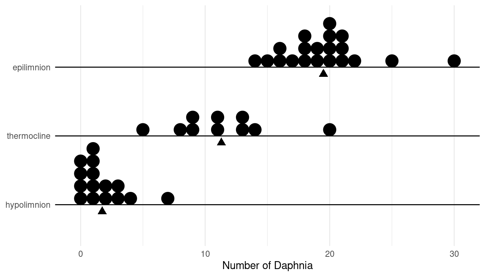

Homework Problem Set 7: Margins of Error and Confidence Intervals for Estimating \(\mu\) and \(p\)
You can also download a PDF copy of this homework assignment.
Answers are given at the end.
Use statdistributions.com to look up values of \(z\) and \(t\) to use for computing margins of error and confidence intervals. Use the standard normal distribution to look up \(z\) and use Student’s \(t\) distribution to look up \(t\).
Mendel’s Peas
In an earlier practice problem you encountered a classic study by Gregor Mendel on the inheritance of the trait of color in pea plants. He bred pea plants by crossing plants from a strain that only produced green peas with another strain that only produced yellow peas. The first-generation offspring from this crossbreeding then produced a strain of pea plants that were presumed to carried the genes for both yellow and green peas — one from each parent. However these plants only had yellow seeds because it was assumed that the yellow genes are dominant in the sense that an offspring with at least one gene for yellow peas will always have yellow peas. The only way for a plant to have green peas is if both genes were for green peas. The plants from the first-generation offspring were then crossed with themselves to produce the second-generation offspring.
What was particularly relevant to Mendel was the probability that a second-generation offspring would have yellow peas because this probability has implications for Mendel’s ideas about genetics and inheritance. Let \(p\) represent this probability. In one study Mendel produced 8023 second-generation offspring, so we have 8023 observations of the variable color (i.e., yellow or green), and for 6022 of the 8023 observations the color was yellow. Use this information to compute the margin of error for estimating \(p\), as well as the confidence interval to estimate \(p\). Use a confidence level of 95%.
The Trebuchet at Château des Baux
Several years ago I saw a working full scale working trebuchet at Château des Baux in Les Baux-de-Provence. Suppose that engineers want to know the mean distance this trebuchet will throw a projectile of a given weight. Let \(x\) be the distance that the trebuchet throws a projectile on a given observation. This is a random variable from our perspective because various uncontrollable factors will cause \(x\) to vary from observation to observation. The engineers want to know is \(\mu\), the mean distance that the trebuchet throws a projectile. To estimate \(\mu\) they fire the trebuchet 25 times to produce 25 observations of \(x\). From this sample they compute a mean distance of 250 meters and a standard deviation of the distances of 15 meters. Compute the margin of error for estimating \(\mu\), and the confidence interval to estimate \(\mu\). Use a confidence level of 95%.
Experiments for Extra Sensory Perception
Some early experiments designed to test for extra sensory perception (ESP) used “Zener cards” named after Karl Zener.1 A typical pack of cards contains 25 cards that are each printed with one five symbols. Each symbol appears in the deck five times. Examples of each card are shown in Figure 2.  In a typical experiment, the deck would first be shuffled and then the experimenter would select a card from the deck, study it, but not show it to the subject. The subject would then be asked “read the mind” of the experimenter to determine the symbol on the card. This would proceed until all of the cards in the deck had been exhausted, although it could be repeated as many times as desired by reshuffling the deck and going through it again. The subject would not be told if they were correct or incorrect so they could not more easily guess later cards by simply determining which cards had already been seen.
In a typical experiment, the deck would first be shuffled and then the experimenter would select a card from the deck, study it, but not show it to the subject. The subject would then be asked “read the mind” of the experimenter to determine the symbol on the card. This would proceed until all of the cards in the deck had been exhausted, although it could be repeated as many times as desired by reshuffling the deck and going through it again. The subject would not be told if they were correct or incorrect so they could not more easily guess later cards by simply determining which cards had already been seen.
| Hobbit | Correct | Cards |
|---|---|---|
| Frodo | 4 | 25 |
| Merry | 12 | 50 |
| Pippin | 39 | 75 |
| Sam | 26 | 100 |
| \(x\) | \(P(x)\) |
|---|---|
| correct | \(p\) |
| incorrect | \(1-p\) |
That is, for a randomly selected card they will correctly read/guess the card with probability \(p\), and be incorrect with probability \(1-p\). It is of interest to estimate \(p\), because if we can clearly show that \(p\) is larger than 0.2 (which is the probability of being correct by guessing) then that would be interpreted as evidence that the subject has some capacity for ESP (albeit not perfect unless \(p\) = 1). Let \(p_f\), \(p_m\), \(p_p\), and \(p_s\) denote the probability of correctly reading/guessing a card for each of the four subjects (the subscripts correspond to the first letter of their names). For each parameter, use the information given above to provide a point estimate, the standard error, the margin of error, and a confidence interval for the probability that they can correctly read/guess the card. Use a confidence level of 95%.
Survey of Daphnia Density
Daphnia are a genus of tiny planktonic crustaceans found in freshwater lakes, ponds, streams, and rivers. In addition to being an organism of interest to biologists, ecologists, and fisheries researchers, the health of daphnia are often used to help assess the general health of a freshwater ecological system. A survey obtained several one-liter samples of water from a lake at different depths.2 The depths corresponded to three layers of the lake: the epilimnion layer (the surface layer of warmer water), the hypolimnion layer (the bottom layer of colder water), and the thermocline (a thin layer between the epilimnion and hypolimnion layers where the temperature changes dramatically over a small change in depth). A device was lowered into the water at a prescribed depth, opened so that it could fill with one liter of water, and then closed and brought back to the surface. The number of daphnia within each liter of water collected was recorded. The data for the samples from each layer are shown below.  The table below gives the mean, standard deviation, and sample size for the samples of observations of the number of daphnia in each liter of water.| Layer | \(\bar{x}\) | \(s\) | \(n\) |
|---|---|---|---|
| epilimnion | 19.50 | 3.58 | 20 |
| thermocline | 11.30 | 4.08 | 10 |
| hypolimnion | 1.73 | 1.91 | 15 |
Let \(x\) be the number of daphnia in a liter of water sampled from one of the three layers. It is a random variable but its mean depends on the layer from it was obtained. Let this mean be represented as \(\mu_e\), \(\mu_t\), and \(\mu_h\) corresponding to the epilimnion, thermocline, and hypolimnion layers, respectively. As this is a survey we can view these parameters as the mean number of daphnia per liter in each of the layers (i.e., the density of daphnia in each layer). For each of these parameters, find/compute a point estimate, the standard error, the margin of error, and the confidence interval. Use a confidence level of 95%. Also compute the median and mean of the error of estimation for estimating \(\mu_e\), \(\mu_t\), and \(\mu_h\).
Mendel’s Peas (Solutions)
Rounding to the fourth decimal place, the margin of error is approximately 0.0095 and the confidence interval is approximately 0.7506 \(\pm\) 0.0095 or (0.7411, 0.7601). Note that the margin of error is relatively small because the sample size is relatively large.
The Trebuchet at Château des Baux (Solutions)
The margin of error is 6.192 meters, and the confidence interval is 250 \(\pm\) 6.192 meters or (243.808 m, 256.192 m).
Experiments for Extra Sensory Perception (Solutions)
The table below gives the point estimate, standard error, margin of error, and confidence interval for \(p_f\), \(p_m\), \(p_p\), and \(p_s\).| Hobbit | Point Estimate | Standard Error | Margin of Error | Confidence Interval |
|---|---|---|---|---|
| Frodo | 0.16 | 0.073 | 0.144 | (0.016, 0.304) |
| Merry | 0.24 | 0.060 | 0.118 | (0.122, 0.358) |
| Pippin | 0.52 | 0.058 | 0.113 | (0.407, 0.633) |
| Sam | 0.26 | 0.044 | 0.086 | (0.174, 0.346) |
Note that the results shown above were rounded, but no rounding was performed in intermediate calculations. Your answers may differ slightly.
If someone can only guess the correct card, the probability that they would be correct is \(p\) = 0.2. Note that every confidence interval except that for Pippin contains \(p\) = 0.2. Perhaps he has ESP?
Survey of Daphnia Density (Solutions)
The table below gives the point estimate, standard error, margin of error, and confidence interval for each layer of \(\mu_e\), \(\mu_t\), and \(\mu_h\).| Layer | Point Estimate | Standard Error | Margin of Error | Confidence Interval |
|---|---|---|---|---|
| epilimnion | 19.50 | 0.80 | 1.68 | (17.82, 21.18) |
| thermocline | 11.30 | 1.29 | 2.92 | (8.38, 14.22) |
| hypolimnion | 1.73 | 0.49 | 1.06 | (0.67, 2.79) |
| Layer | Standard Error | Margin of Error | Median Error | Mean Error |
|---|---|---|---|---|
| epilimnion | 0.80 | 1.68 | 0.54 | 0.64 |
| thermocline | 1.29 | 2.92 | 0.87 | 1.03 |
| hypolimnion | 0.49 | 1.06 | 0.33 | 0.39 |
Note that the results have been rounded.
Source: Gregoire, T. G. & Valentine, H. T. (2007). Sampling strategies for natural resources and the environment. Boca Raton, FL: Chapman & Hall/CRC.↩︎